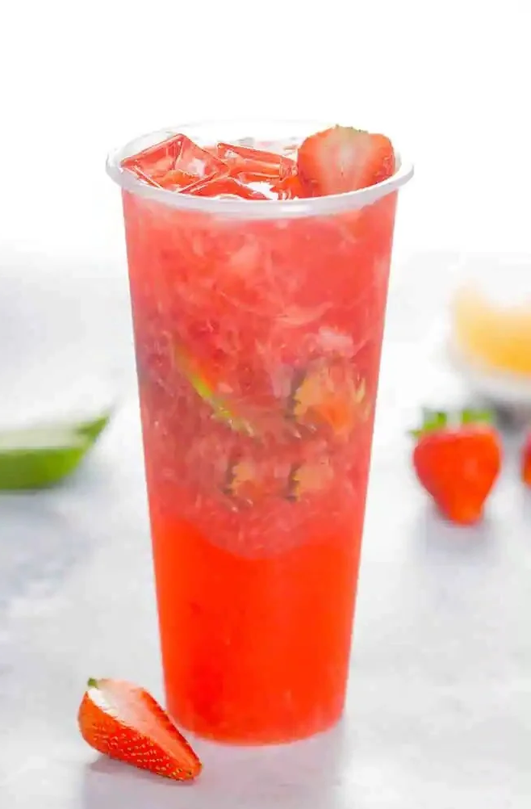
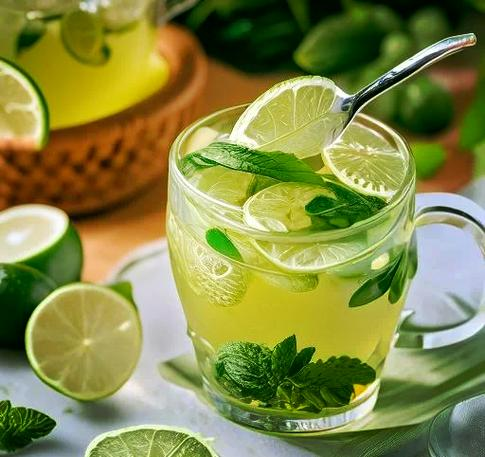
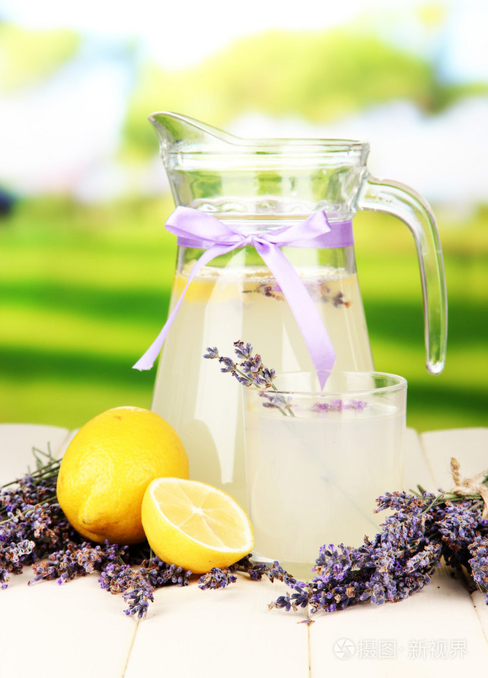
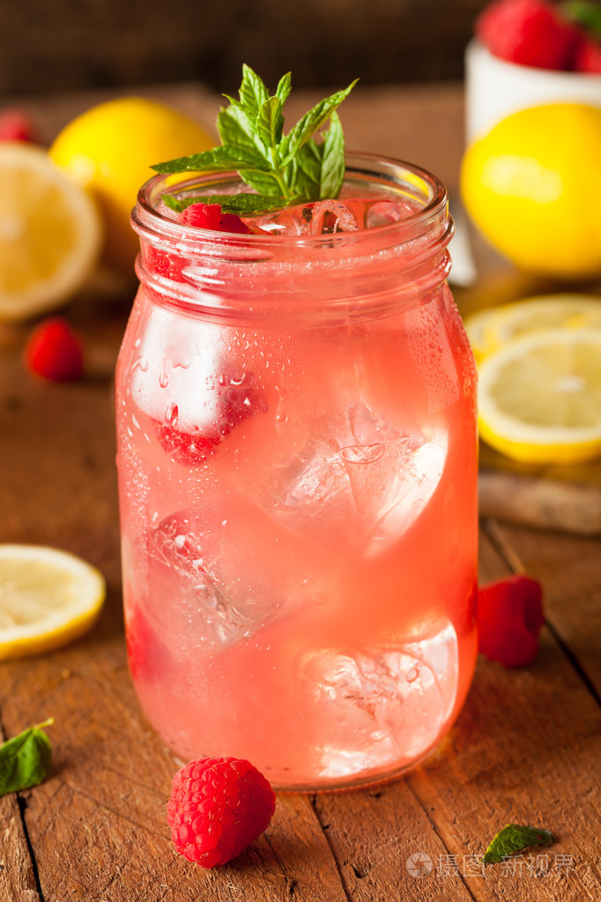
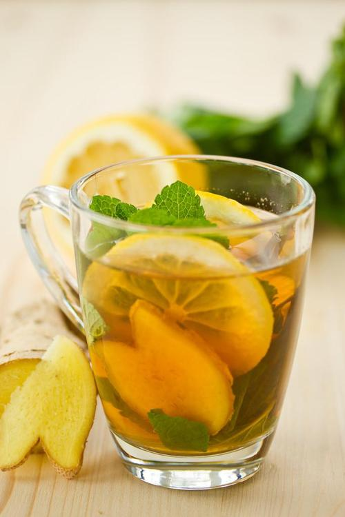

Creative Variations
Give your classic lemonade a twist with these fun and flavorful variations.

Strawberry Lemonade
Blend fresh or frozen strawberries and strain the puree into your classic lemonade for a sweet, pink treat.

Mint Lemonade
Muddle fresh mint leaves at the bottom of your pitcher before adding the other ingredients for a cool, refreshing flavor.

Lavender Lemonade
Infuse your simple syrup with dried lavender buds to create an elegant, floral, and calming version of the classic.

Raspberry Lemonade
Similar to strawberry, muddle fresh raspberries and add them to the mix for a vibrant color and tart flavor.

Spicy Ginger Lemonade
Add a few slices of fresh ginger to your simple syrup as it heats. This gives the lemonade a warm, spicy kick.